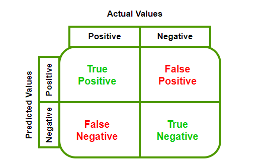
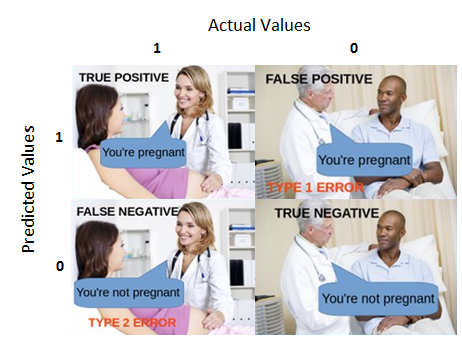
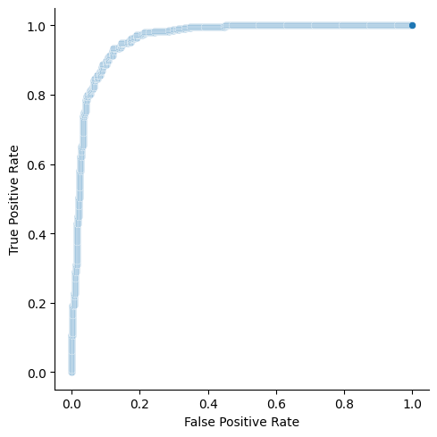
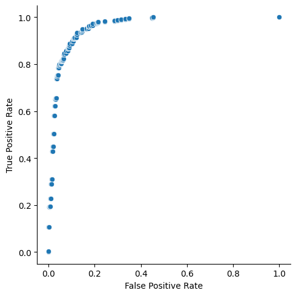

from sklearn.linear_model import LogisticRegression
from sklearn.metrics import roc_curve, roc_auc_score
from sklearn.datasets import make_classification
from sklearn.model_selection import train_test_split
import numpy as np
import seaborn as sns
import pandas as pdBackground
AUC ROC is one of the most widely used metrics for binary classification tasks in machine learning. However, I used it as a “black box” which quantifies the model result in a meaningful way without considering what is going on under the hood. I think, it is time to dive deeper into how AUC ROC is calculated and its relation with ROC curve.
First things first, to construct ROC curve we need to understand confusion matrix, false positive rate, true positive rate and thresholds. Confusion matrix is a square matrix (2x2 in binary classification tasks) that summarizes model performance. The following image describes the confusion matrix: 
If you are confused with the above imaga, here is an example from real life: 
As for FPR and TPR, TPR is the number of positive classes correctly classified out of all positive classes and fpr is the number of negative classes incorrectly classified out of all negative classes.
\[False Positive Rate = \frac{False Positive}{False Positive + True Negative}\] \[True Positive Rate = \frac{True Positive}{True Positive + False Negative}\]
Threshold is a number that divides data into positive and negative classes based on its score or probability. For example, default threshold is 0.5 and if a model gives some data point a score of 0.51(in other words, probability of this exact point belonging to positive class is 0.51) it goes into positive class as its score is higher than the threshold and vice versa. These are all the things we needed to know before constructing ROC curves and now let’s build a roc curve from scratch.
ROC Curve Generation
Algorithm for building a ROC curve is as follows: 1. Set a threshold value between 0 and 1. 2. Make a prediction on the test set and get the probabilities. 3. Compute confusion matrix based on your threshold. 4. Compute fpr and tpr and plot on the graph. 5. Go to step 1.
As you can see the algorithm is pretty straightforward.
However, there is even simpler way to construct roc curves. We will use monotonocity of the curve. In other words, if one point belongs to class 1 on some threshold, it won’t change on lower thresholds.
First of all, we will import necessary libraries and make a dummy dataset and split it into train and test.
Note
Note that the code is simplified in order to explain the concept.
X, y = make_classification(n_samples=2000, n_features=7, n_classes=2, random_state=42, weights=None)
X_train, X_test, y_train, y_test = train_test_split(X, y, test_size=0.4, shuffle=True, random_state=42)
unique, cnts = np.unique(y_test, return_counts=True)
print(unique, cnts)[0 1] [393 407]Now, we fit simple logistic regression and acquire probabilities of a point belonging to class 1.
clf = LogisticRegression(random_state=42).fit(X_train, y_train)
probs = clf.predict_proba(X_test)[:, 1]
clf.classes_array([0, 1])scores = np.c_[y_test, probs]df_scores = pd.DataFrame(scores)
scores_sorted = df_scores.sort_values(by=1, axis=0, ascending=False)
scores_sorted.columns = ["Class", "Score"]
scores_sorted.head()| Class | Score | |
|---|---|---|
| 592 | 1.0 | 0.999959 |
| 270 | 1.0 | 0.999900 |
| 487 | 1.0 | 0.999880 |
| 146 | 1.0 | 0.999876 |
| 503 | 1.0 | 0.999778 |
Now, we have probabilities and we merge these probabilities with the true class labels, then sort the resulting dataframe like above.
Classical algorithm of ROC curve construction is really simple. First, we define a data structure(in our case, list) to hold points and false_positive and true_positive variables to keep track of the values. Then, we traverse through the above dataframe, and use formulas to find FPR and TPR, and increment the correspoinding variable. The python code is as following:
class DATA:
R = []
FP, TP =0, 0
f_prev = -np.inf
def calc_roc(x):
if x.Score != DATA.f_prev:
DATA.R.append([DATA.FP/393, DATA.TP/407])
DATA.f_prev = x.Score
if int(x.Class) == 1:
DATA.TP += 1
else:
DATA.FP += 1
scores_sorted.apply(calc_roc, axis=1)
r_np = np.array(DATA.R)One ambigious part of the algorithm is when we check current score value is not equal to the previous score value. Intuition behind this is, when we have equal score values with different class labels, we should take average values of both FPR and TPR in order to avoid optimistic or pessimistic evaluations. In our case, it is easier to drop such values. At the end, we plot the roc curve with the help of seaborn.
g = sns.relplot(
x=r_np[:, 0],
y=r_np[:, 1],
kind="scatter"
)
g.set_axis_labels("False Positive Rate", "True Positive Rate")Fortunately, scikit-learn module also can build ROC curves with the help of roc_curve function. We need to pass this function true values, probability scores and should tell which label is positive. In return, it gives us FPR, TPR and threshold values.
fpr, tpr, thresholds = roc_curve(y_test, probs, pos_label=1, drop_intermediate=False)g = sns.relplot(
x=fpr,
y=tpr,
kind="scatter"
)
g.set_axis_labels("False Positive Rate", "True Positive Rate")
As you can see, two graphs are identical. drop_intermediate attribute is used to drop non-optimized threshold values in order to minimize number of points in our ROC curve.
fpr, tpr, thresholds = roc_curve(y_test, probs, pos_label=1, drop_intermediate=True)g= sns.relplot(
x=fpr,
y=tpr,
kind="scatter"
)
g.set_axis_labels("False Positive Rate", "True Positive Rate")
Characteristics of a ROC curve
ROC curve, usually, is used to choose an optimal threshold for the task. Choosing an optimal threshold depends on the problem you are solving. For example, if your task is classifying patients based on the presence of cancer, it is important to you not to label people with cancer as healthy. Thus, you should minimize the number of false negatives, and you should choose the threshold with the maximum True Positive Rate. However, if you just want to choose an optimal threshold, there is a simple formula, Youden’s J satistic: \[J = TruePositiveRate - FalsePositiveRate\] You should choose \(J\) with maximum value.
One of the key features of ROC curve is that it is insensitive to the imbalance dataset. It will not change if you change the size of positive class or negative class, as TPR and FPR are independant.
AUC (Area Under the Curve) ROC
AUC ROC is just Area Under the ROC Curve. It gives us a number between 0 and 1. AUC ROC score of 1 means that your classifier is perfect, and 0 means that you are doing something wrong as random guessing will give us AUC score of 0.5. So, you do not want to use classifier which gives score under 0.5. Statistically, AUC represents the probability that a random positive variable will be ranked higher than a random negative variable.
In order to calculate the AUC you can use the following formula: \[\frac{(fpr_{i+1} - fpr_{i}) * (tpr_{i} + tpr_{i+1})}{2}\]
Or use sklearn’s roc_auc_score function.
This post only scratched the surface about ROC and AUC. If you want to go really deep, I would suggest the following article.